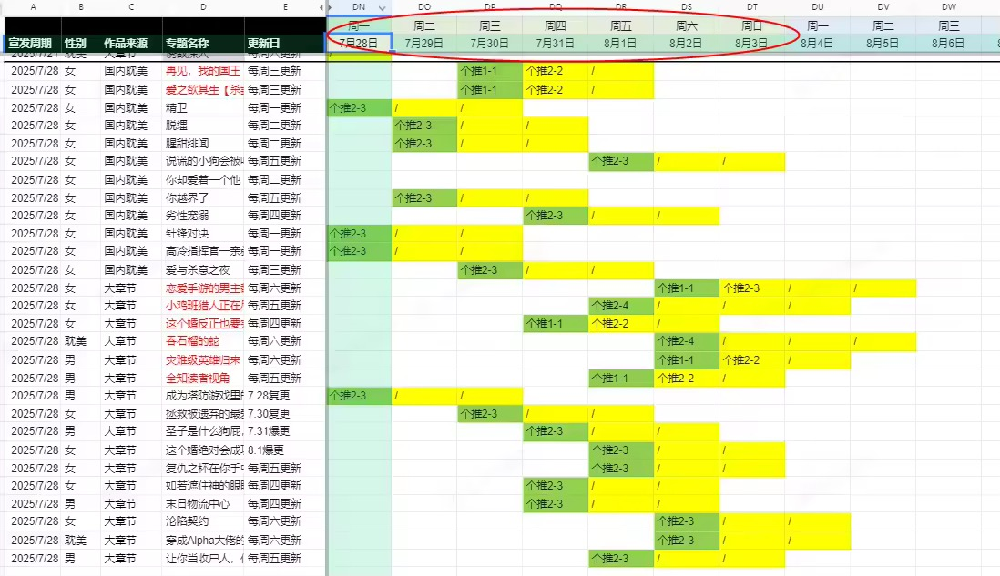

推荐位 CTR 从 4% 到 15%
01背景
实习期间我负责漫画推荐位的日常运营。接手时点击率停在 4% 左右，低于站内其他位置；团队的判断是：短期内没有起色，这个位置的资源会被撤掉。
下面记录这三个月的完整优化过程：怎么定位问题、改了什么、效果怎么验证。
02问题
推荐位在产品首页第二屏，位置不算差，物料也由设计组按周轮换，但点击率就是上不去。
我做的第一件事不是改物料，而是把推荐位的转化链路拉出来看——先确定问题出在哪一层，再决定改什么。
03漏斗归因
我按曝光 → 点击 → 阅读 → 付费把转化链路拆开，逐层和站内表现好的位置做横向对比。问题集中在曝光 → 点击这一层：内容本身有人看，但推到的人不对——是流量结构的问题，不是内容质量的问题。
04三步行动
归因之后没有一次全改。三个行动，每步只改一个变量，跑一周看数据，再决定下一步。
Step 1 · 换人群包（最大变量）
把推荐位的人群包从垂类包换成已读召回——让最近读过相关内容的用户看到推荐。
调整后 CTR 明显回升，方向得到验证：问题在人群，不在物料。

Step 2 · 换素材（验证物料空间）
人群稳定后，再验证物料。请设计组出了三套素材，同周期轮换对比：
- 双人互动场景
- 单人特写 + 道具
- 原作名场面截图
三轮对比下来，双人互动场景的数据最好，后续素材沿用这个方向。
Step 3 · 改文案（最后打磨）
最后从文案入手：把"治愈系·甜文推荐"这类通用句式，换成有信息增量的短句，例如"男主 OOC，杀妻变宠妻"。
文案调整后，CTR 稳定在 15% 左右。
05结果
三个月里，这个推荐位的点击率从 4% 提升到 15% 左右。
实习结束前，我把整个过程整理成复盘文档交给团队：问题怎么定位、每一步改了什么、效果怎么验证，接手的同事可以照着做。
06复盘
① 错的不一定是物料，是流量结构
我最初的直觉是"换物料、做新文案"。漏斗定位后发现，人群包错配才是主要问题——如果只盯着表层改，碰不到根因。
② 一次只改一个变量，才知道哪个起作用
如果第一周就把人群包、素材、文案全部换掉，数据也会涨——但之后遇到同类问题，无法判断哪一步有效。分开验证虽然慢，结论却可以复用。
③ 复盘要写出方法，不只是写出结果
复盘文档里写的不是"CTR 涨了 11 个百分点"，而是"先看漏斗定位层级 → 一次只改一个变量 → 每步验证一周"。方法比结论更容易迁移。